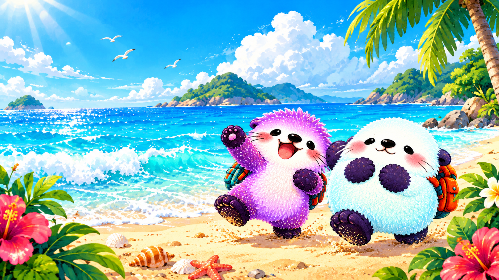
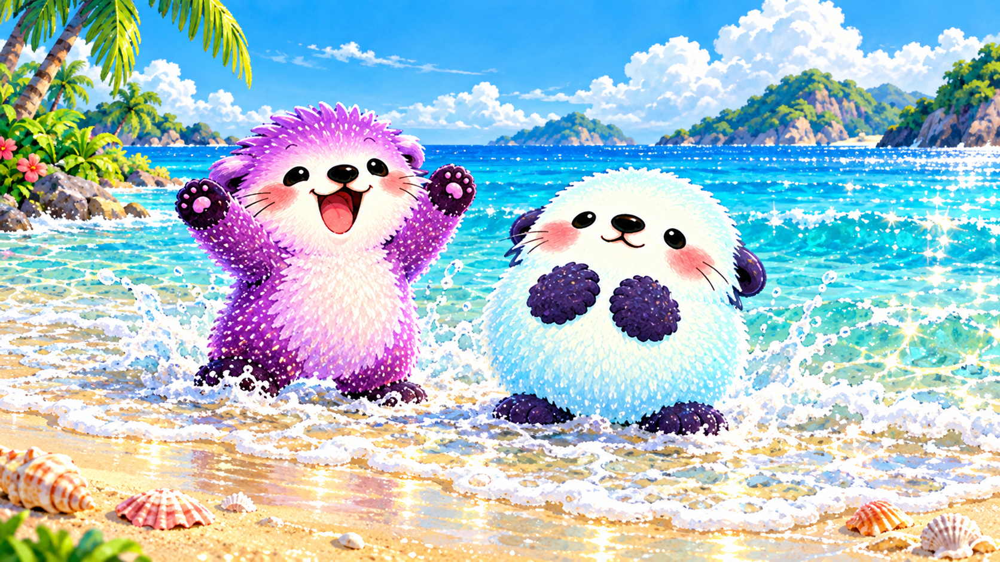
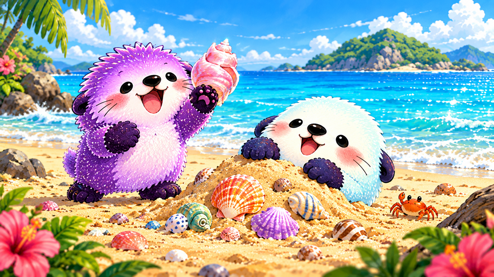
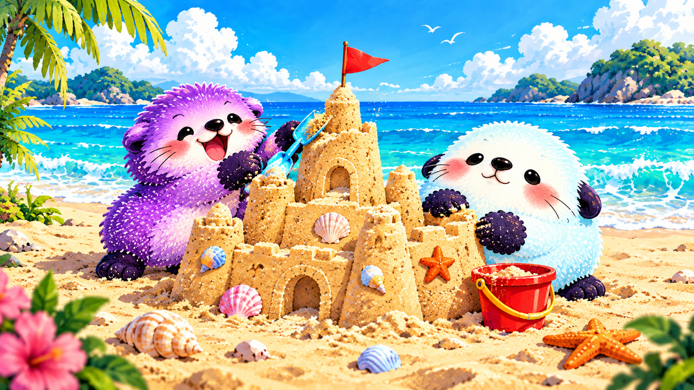
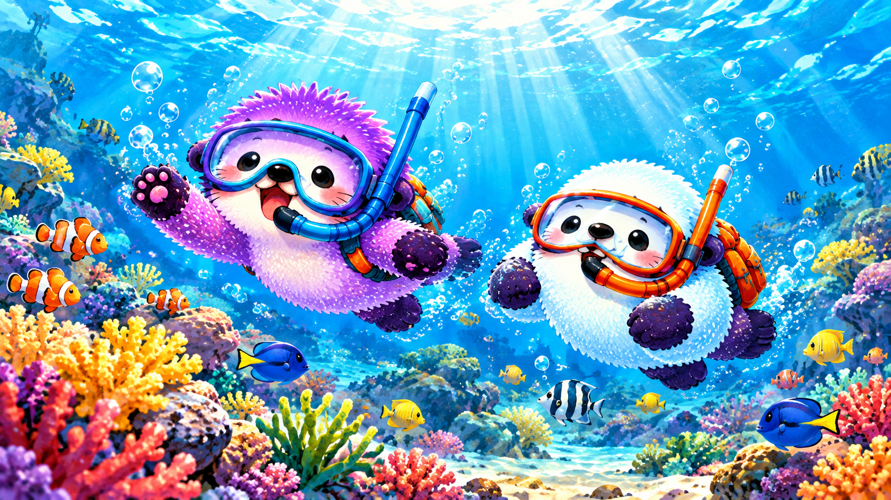
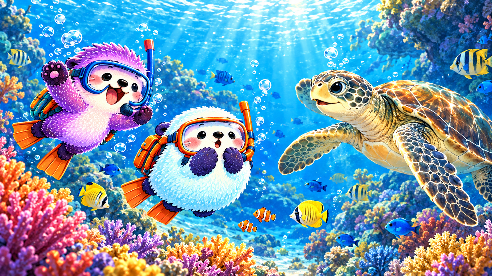
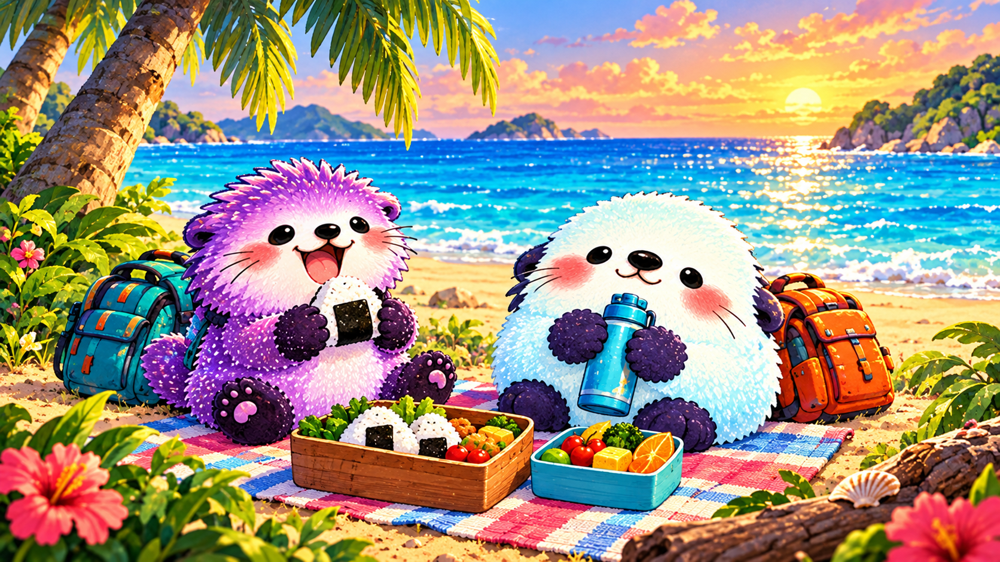

ぷくともちの
うみあそび
きらきらの うみへ、
ふたりで しゅっぱつ！

ぷくともちの
きらきらの うみへ、
ふたりで しゅっぱつ！
スワイプでも めくれるよ →
うみへ いこう
ぷくともちが さかを くだると、
しおの においが ふわり。
ぷく「はやく はやく！」
もち「うみ、ひろいねえ」

はまべ
なみが ふたりの あしもとへ、
しゅわしゅわ ごあいさつ。
きらり しゅわっ
うみで あそぼう
ぷくが ばしゃん！
もちも まけずに ぱしゃん！
ぷく「もっと およごう！」
もち「ぷかぷかも いいね」

かいがら
すなを そっと ほってみたら、
いろとりどりの たからもの。
ぷく「おおきいの みつけた！」
もち「なみの おとが するかな」

すなのおしろ
ぷくは たかい とうを、
もちは まるい かべを ぺたぺた。
ざくっ ぺたぺた

シュノーケリング
ひかりの カーテンを くぐると、
ちいさな さかなが すいすいすい。
ぷくぷく すいーっ

うみの なかまたち
おおきな ウミガメが、
ゆっくり ちかくを およぎます。
ぷく「いっしょに およごう！」
もち「やさしい おめめだね」

ひとやすみ
たくさん あそんだあとの おにぎり。
しおかぜまで おいしい あじです。
ぷく「もう ひとつ！」
もち「ゆっくり たべようね」
ゆうひ
たのしかった いちにちを、
ゆうひが そっと つつみます。
ぷく「また うみに こよう！」
もち「うん、いっしょにね」
なみの おとを ききながら。